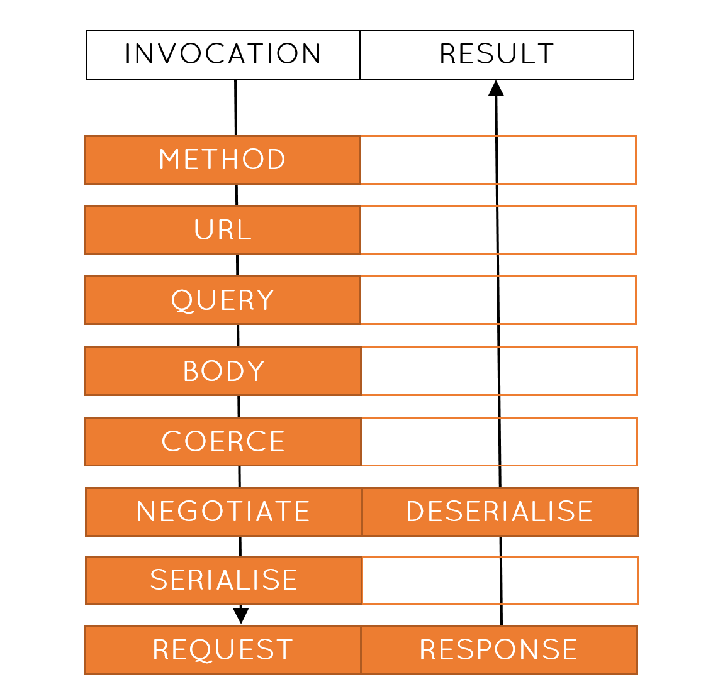
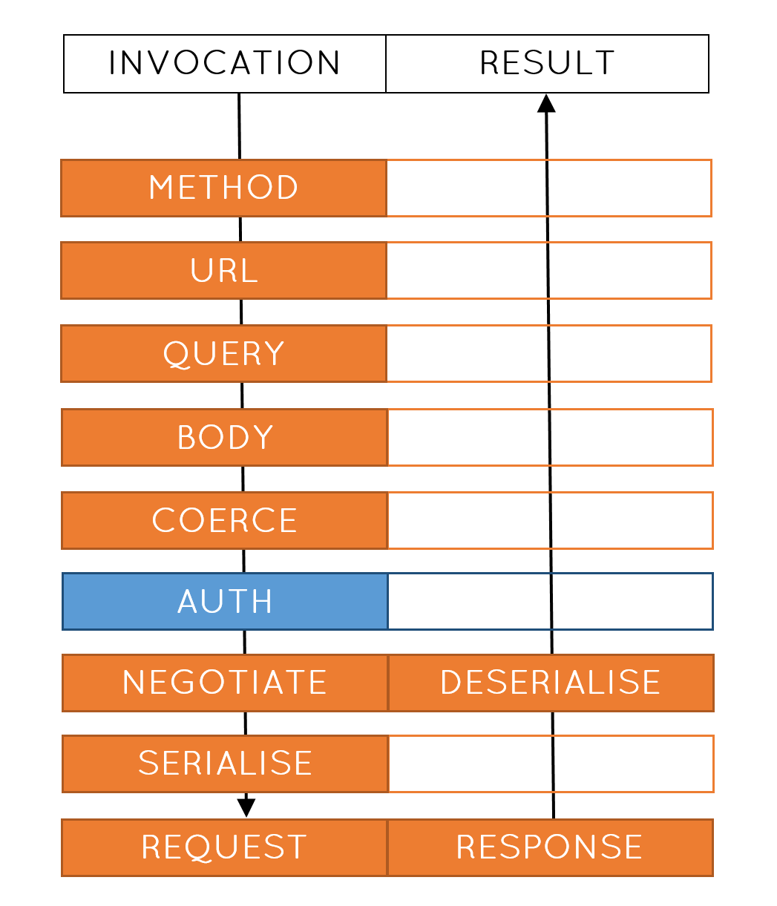

HTTP in Clojure
(defn create-pet []
(http/post "https://api.com/create-pet/dog" {:as :json}))
Route params
(defn create-pet [species]
(http/post (format "https://api.com/create-pet/%s" species)
{:as :json}))
query params
(defn create-pet [species age]
(http/post (format "https://api.com/create-pet/%s" species)
{:as :json
:query-params {:age age}))
body params
(defn create-pet [species name age]
(http/post (format "https://api.com/create-pet/%s" species)
{:as :json
:query-params {:age age}
:body (json/encode {:name name))
:headers {"Content-Type" "application/json"}}))
metrics, environments, authentication...
(defn create-pet [metrics host port creds species name age]
(timing metrics "create-pet"
(http/post (format "https://%s:%s/create-pet/%s" host port species)
{:as :json
:query-params {:age age}
:body (json/encode {:name name))
:headers {"Content-Type" "application/json"
"Authorization" (str "Token" creds)}})))

Signal to noise ratio
(defn create-pet [metrics host port creds species name age]
(timing metrics "create-pet"
(http/post (format "https://%s:%s/create-pet/%s" host port species)
{:as :json
:query-params {:name name}
:body (json/encode {:age age))
:headers {"Content-Type" "application/json"
"Authorization" (str "Token" creds)}})))
The Server
(defn create-pet [request]
(let [species (get-in request [:route-params :species])
age (Integer/valueOf (get-in request [:query-params :age]))
name (-> request
:body
(json/decode keyword)
:name)]
(create-pet species name age)))
That's not a dog
 picture of a uml diagram of a web request or an http spec or something
picture of a uml diagram of a web request or an http spec or something
Signatures
(fn create-pet [species name age])
This is a dog
 picture of a dog with a name tag and a birthday cake with their age on it
picture of a dog with a name tag and a birthday cake with their age on it
Data describing data
{:route-params {:species Species}
:query-params {:age Age}
:body-params {:name Name}
API descriptions
(defhandler create-pet
{:parameters {:path-params {:species Species}
:query-params {:age Age}
:body-params {:name Name}}
:responses {200 {:body {:id Id}}}}
...)
Swagger UI
Martian
(def m (martian-http/bootstrap-swagger
"https://pedestal-api.herokuapp.com/swagger.json"))
Martian
(martian/response-for m :create-pet {:name "Snoop"
:species "Dog"
:age 3})
What does it mean?
- Cleaner code
- Specification always up-to-date
- Easier refactoring
Interceptors

Security is everything
Authentication interceptor
(def authentication
{:name ::authentication
:enter (fn [ctx]
(assoc-in ctx [:request :headers "Authorization"]
"Token: 12456abc"))})
Update the call stack

Update the call stack
(def m (martian-http/bootstrap-swagger
"https://pedestal-api.herokuapp.com/swagger.json"
{:interceptors (concat martian/default-interceptors
[authentication
martian-http/encode-body
(martian-http/coerce-response)
martian-http/perform-request])}))
Timing is everything
Timing interceptor
(def timing
{:name ::timing
:enter (fn [ctx] (assoc ctx ::start (t/now)))
:leave (fn [ctx] (assoc ctx ::duration
(t/minus (t/now) (::start ctx))))})
Update the call stack (again!)

Update the call stack (again!)
(def m (martian-http/bootstrap-swagger
"https://pedestal-api.herokuapp.com/swagger.json"
{:interceptors (concat martian/default-interceptors
[authentication
martian-http/encode-body
(martian-http/coerce-response)
martian-http/perform-request
timing])}))
Interceptors as an API
- Better than multimethods
- Better than binding dynamic vars
- Better than arbitrary options maps
Testing
Stub servers
- Drift away from real life
- Manually written cases
- Slow to run
Mocking
martian-test
- Uses production definition - always correct
- Readable error messages
- Fast
martian-test example
show the bootstrap with the martian-test interceptors
show making a call with bad params (like missing?) returning nice error
Responses
(defhandler create-pet
{:parameters {:path-params {:species Species}
:query-params {:age Age}
:body-params {:name Name}}
:responses {200 {:body {:id Id}}}}
...)
Generating responses
show code to generate a response, and the generated response
Generative testing
show generative test
example handler could maybe try to parse :id as an integer when maybe it's a string
No Swagger? No problem
bootstrap with data
Any implementation
Implementations provided for clj-http, httpkit, cljs-http
If you want to use something else, just write your own interceptor
Alternatives
swagger generated code
finagle
Conclusion
Separate your domain from implementation
Describe data for great good
Interceptor all the things
 oliyh/martian
oliyh/martian